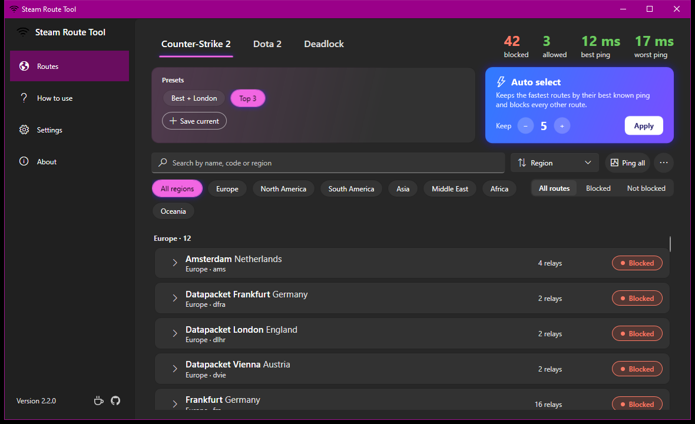

What it does
Counter-Strike 2, Dota 2 and Deadlock connect you to game servers through Valve's relay network (Steam Datagram Relay). Steam Route Tool blocks the relay locations you don't want with Windows Firewall, so matchmaking only puts you on the servers you choose, for example only the ones in your region. It works like a CS2 server picker or region blocker, with the live server list from Steam.
One-click blocking
Block or allow a location with one click, or expand it to block single relays.
Auto select
Keep the fastest routes by ping and block the rest, with a preview and Undo.
Play in one region
Pick a region such as Europe and block everything else.
Presets
Save setups like "EU only" per game and apply them automatically when the game starts.
Runs in the tray
Starts with Windows, switches games and presets from the tray icon.
9 languages
English, Deutsch, Español, Français, Polski, Português (Brasil), Русский, Türkçe, 简体中文.
How to use it
- Download and start the exe. Windows asks for administrator rights.
- Pick your game at the top. The route list comes live from Steam and every location is pinged.
- Block what you don't want: click Allowed on a route, use Auto select, or pick a region and choose Block all except shown.
- Start (or restart) matchmaking. Blocked locations aren't used anymore.
Questions
Can I get VAC banned for using it?
Steam Route Tool never touches the game: it doesn't read or change game files or memory and doesn't inject anything. It only adds Windows Firewall rules, the same as blocking the servers by hand. Firewall-based server pickers have been used for years without known bans, but only Valve can guarantee anything, so use it at your own discretion.
Will it lower my ping?
Not directly. It stops matchmaking from putting you on distant servers, so you end up on the closest ones you allowed.
Why do I wait longer for a match?
Fewer allowed locations mean fewer servers to match on. Keep a few nearby routes open, or unblock more if the queue takes too long.
Does it work with FACEIT or community servers?
No, they use their own servers. It affects official matchmaking in CS2 (Premier, Competitive, Casual, Deathmatch and more), Dota 2 and Deadlock.
How do I undo everything?
Use Unblock all in the ⋯ menu. Or turn on Unblock all routes when closing so routes are only blocked while the app is open.
Code signing
Free code signing provided by SignPath.io, certificate by SignPath Foundation. Releases are built and signed only by GitHub Actions from the public source code. Until signing is active, Windows SmartScreen may warn the first time: choose More info, then Run anyway. Every release lists the SHA-256 of its files in SHA256SUMS.txt. Details: code signing policy.
Privacy
Steam Route Tool collects no data and has no accounts, analytics or telemetry. It only connects to Steam to get the relay list, to GitHub to check for and download updates, and to Valve's relays to ping them. Your settings stay on your PC. Details: privacy.